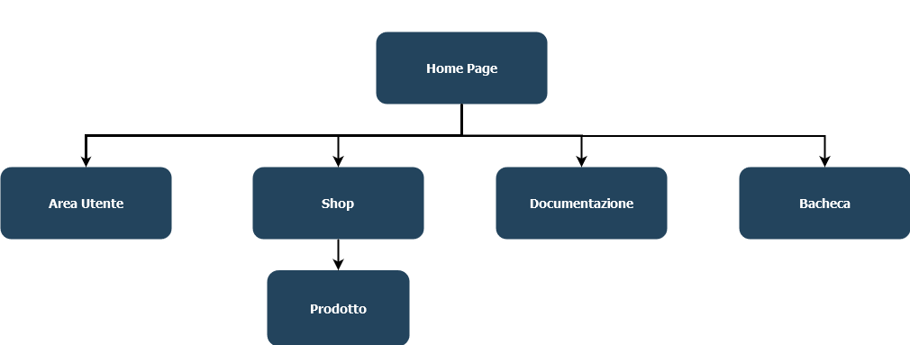
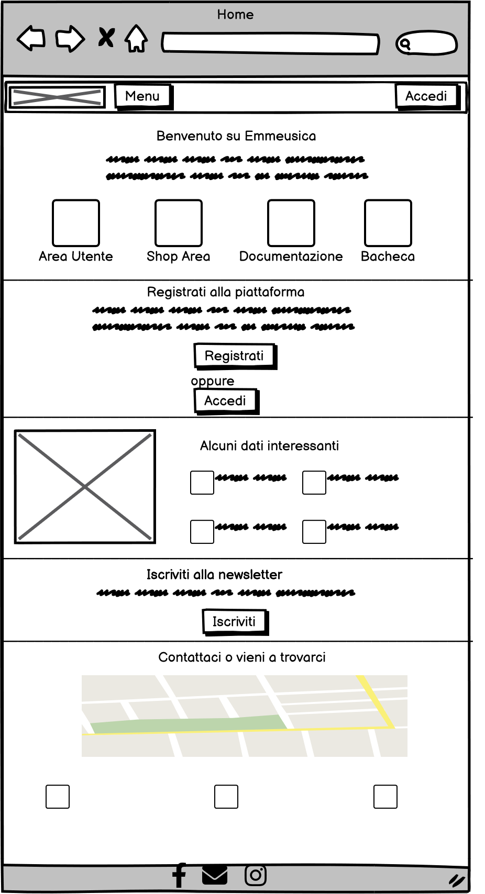
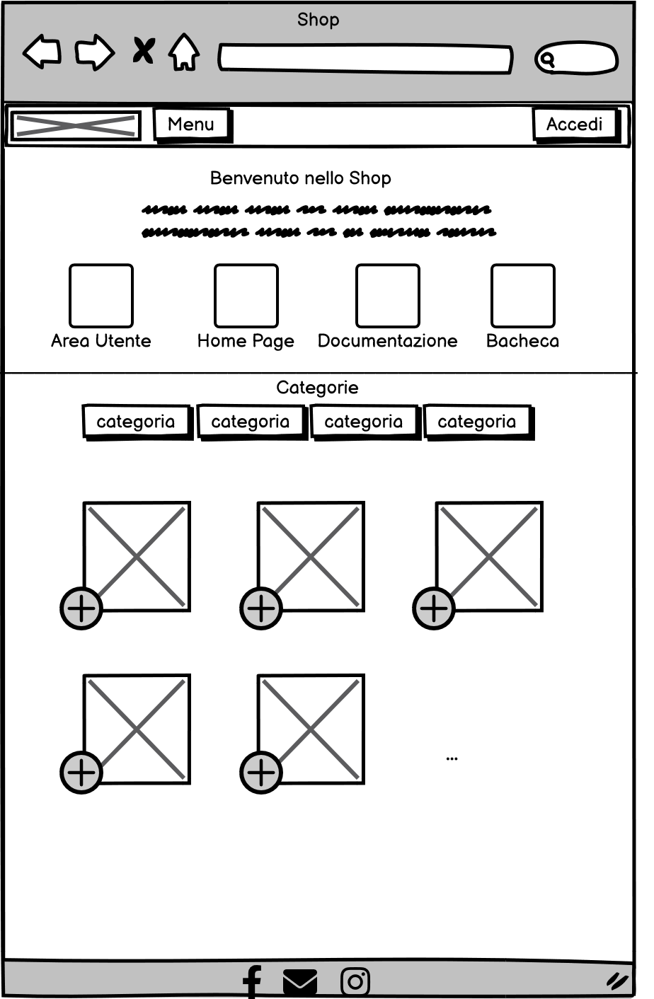
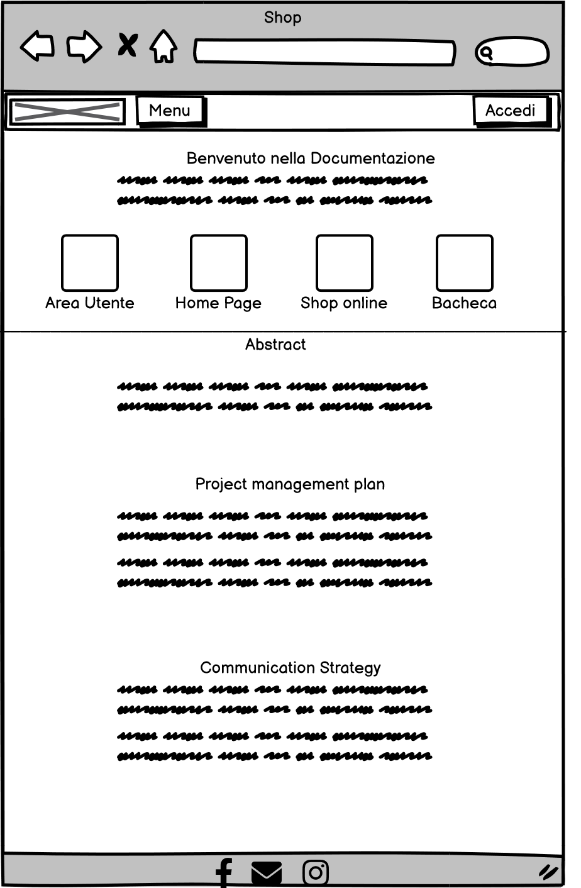
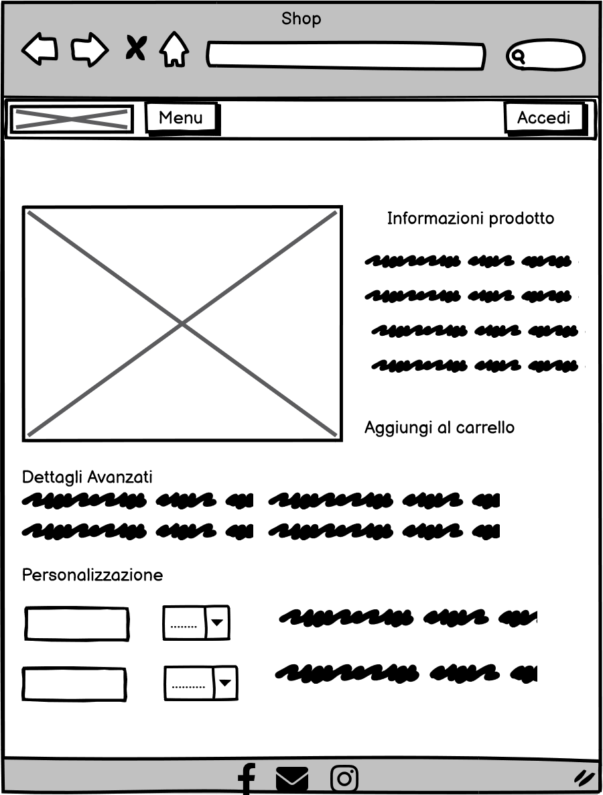

ABSTRACT
Alla fine del progetto scrivi un abstract (<100 parole) in cui sintetizzi gli obiettivi del tuo sito web (cosa? perchè?), il tuo target utente (chi?) e il valore aggiunto del sito realizzato (come?).
PROJECT MANAGEMENT PLAN
1. Benchmarking
OBIETTIVI: Emmeusica si prefigge di creare un e-commerce di successo
specializzato nella vendita di una vasta gamma di strumenti musicali personalizzabili per soddisfare le
esigenze e i gusti dei clienti.
TARGET UTENTE: Il target utente primario di Emmeusica comprende gli
appassionati di musica di tutte le età e livelli di esperienza che desiderano acquistare strumenti musicali
personalizzati. Questo può includere musicisti amatoriali, professionisti, band, insegnanti di musica e gli
appassionati che desiderano regalare uno strumento unico
Competitors: - MusicStore: MusicStore è un sito web simile che offre una
vasta selezione di strumenti musicali di diverse marche e modelli. Si rivolge a un pubblico ampio e offre
anche servizi di riparazione e noleggio di strumenti. Tuttavia, MusicStore non offre la possibilità di
personalizzare gli strumenti come fa Emmeusica.
HaloGuitars.com: HaloGuitars.com è un altro sito web che si concentra sulla vendita di chitarre
personalizzate. Offre una vasta scelta di opzioni per la personalizzazione delle chitarre, come materiali,
finiture e pickup. Tuttavia, HaloGuitars.com è specializzato solo nelle chitarre personalizzate, mentre
Emmeusica offre una gamma più ampia di strumenti musicali personalizzabili.
2. Struttura e Layout
ARCHITETTURA: Emmeusica si compone delle seguenti pagine: 
WIREFRAMES:

  
LOOK AND FEEL: Per quanto riguarda il font ho utilizzato l'Open Sans,
Sans Serif, in quanto “ è stato sviluppato con uno stress verticale, forme aperte e un aspetto neutro ma
amichevole ed è ottimizzato per le leggibilità attraverso le interfacce Web e Mobile” - fonte - Inoltre è uno dei font più popolari, nonchè
il carattere predefinito di Mozilla e Telegram. Implementare sul sito un font molto diffuso è un grosso
aiuto per un nuovo visitatore in quanto non dovrà adattarsi ed abituarsi ad un nuovo stile e sarà quindi per
lui più semplice fidarsi della piattaforma.
La palette di colori scelta è nero, bianco e verde. Nero e bianco sono colori che nel bene o nel male
sono onnipresenti in qualsiasi sito web, è difficile escluderli e realizzare una buona piattaforma, basti
pensare che al giorno d'oggi quasi tutti gli sfondi di pagina dei siti web sono lasciati prevalentemente
bianchi se non per poche eccezioni. Detto questo serve comunque un colore simbolo della piattaforma, che
permetta all'occhio di riconoscere immediatamente le caratteristiche e le features specifiche che il sito
offre.
Il logo, i pulsanti e molte altre cose sono quindi verdi, ad indicare tutti quegli elementi
strutturali che si ripetono in ogni pagina e la rendono veramente Emmeusica in se. La presenza di altri
colori oltre quelli gia citati quindi spicca molto a primo impatto e porta l'utente a concentrarsi su
quelli, di conseguenza sono stati impiegati con moderazione e solo nelle parti di cruciale interesse per
l'attività svolta dalla piattaforma.
Il Feel della pagina vuole ricondursi ai nuovi siti moderni che creano una sensazione di scorrimento
ancora più piacevole, dividendo la pagina di diverse sezioni orizzontali che ad alternanza riprendono lo
sfondo e si adattano per poter stare gradevolmente sopra di esso.
3. Linguaggi e Strumenti
Linguaggi utilizzati: Html, Css, Javascript, Jquery.
Strumenti a Supporto:
Bootstrap, Font Awesome, Google Analytics? Visual Studio Code, Draw.io , GitHub , Balsamiq.
COMMUNICATION STRATEGY
1. Background: Sulla base del benchmarking effettuato tra Emmeusica, MusicStore
e HaloGuitars.com, possiamo descrivere le scelte di comunicazione web delle tre aziende in termini di pro
e contro:
Emmeusica:
- Pro: Emmeusica offre la possibilità di personalizzare gli strumenti musicali, il che potrebbe essere un
punto di forza per attirare clienti interessati a prodotti unici e personalizzati. Questo aspetto può
differenziare Emmeusica dai suoi competitors e creare un vantaggio competitivo.
- Contro: Tuttavia, Emmeusica potrebbe essere vista come un'opzione più specializzata o di nicchia
rispetto a MusicStore, poiché quest'ultimo offre una vasta selezione di strumenti musicali di diverse
marche e modelli. Inoltre, se Emmeusica si concentra troppo sulla personalizzazione degli strumenti,
potrebbe limitare il proprio mercato di riferimento a clienti che desiderano un livello di
personalizzazione specifico.
MusicStore:
- Pro: MusicStore ha un pubblico più ampio grazie alla sua vasta selezione di strumenti musicali di
diverse marche e modelli. Questo può attrarre un numero maggiore di clienti che cercano una varietà di
opzioni e preferiscono esplorare diverse marche e modelli prima di effettuare un acquisto.
- Contro: Tuttavia, MusicStore potrebbe essere vista come meno specializzata nella personalizzazione
degli strumenti rispetto ad Emmeusica. Se un cliente è specificamente interessato alla personalizzazione
degli strumenti, potrebbe preferire Emmeusica come opzione più focalizzata.
HaloGuitars.com:
- Pro: HaloGuitars.com è specializzata nella vendita di chitarre personalizzate e offre una vasta scelta
di opzioni per la personalizzazione. Questo potrebbe attrarre clienti che cercano una chitarra
personalizzata di alta qualità e sono disposti a investire in un prodotto su misura.
- Contro: Tuttavia, HaloGuitars.com è specializzata solo nelle chitarre personalizzate, mentre
Emmeusica offre una gamma più ampia di strumenti musicali personalizzabili. Ciò potrebbe limitare il
mercato di riferimento di HaloGuitars.com a coloro che cercano specificamente una chitarra personalizzata,
mentre Emmeusica potrebbe avere una base di clienti più ampia interessata a diversi tipi di strumenti
personalizzati.
Oltre ai punti precedentemente menzionati, Emmeusica ha un'ulteriore caratteristica distintiva nella sua
comunicazione web. Il sito si propone di presentare i prodotti in modo visuale, con un'anteprima immediata
tramite l'immagine del prodotto. Quando si passa il mouse sopra un prodotto, vengono visualizzate
ulteriori informazioni sullo stesso.
Questa scelta di presentazione può essere considerata un punto di forza per Emmeusica per diversi motivi:
- Esperienza utente intuitiva: La visualizzazione dei prodotti tramite immagini e l'accesso alle
informazioni solo al passaggio del mouse crea un'esperienza utente immediata e intuitiva. Gli acquirenti
possono avere una visione rapida e chiara del prodotto senza dover navigare attraverso un complesso
sistema di informazioni sullo schermo. Ciò può ridurre il tempo necessario per trovare ciò che cercano e
aumentare l'engagement degli utenti.
- Focus sull'aspetto visivo: Concentrando gli acquirenti sulla visione del prodotto, Emmeusica mette in
risalto l'aspetto estetico degli strumenti musicali personalizzati. Questo è particolarmente importante
quando si tratta di strumenti musicali, poiché la loro estetica e il loro design possono influenzare la
scelta dei clienti. Emmeusica sfrutta questa caratteristica per catturare l'attenzione degli utenti e
valorizzare l'aspetto unico dei suoi prodotti.
Tuttavia, è importante sottolineare che, nonostante i vantaggi sopra citati, Emmeusica dovrebbe bilanciare
questa scelta con l'inclusione di informazioni essenziali che potrebbero influenzare la decisione di
acquisto degli acquirenti. È necessario trovare un equilibrio tra l'aspetto visivo e le informazioni
pertinenti per soddisfare le esigenze degli utenti e fornire una comunicazione web efficace.
In conclusione, Emmeusica si distingue per la possibilità di personalizzare una vasta gamma di strumenti
musicali, il che può essere un vantaggio competitivo. Tuttavia, dovrebbe bilanciare la sua comunicazione
per non apparire troppo specializzata e limitata. MusicStore, d'altra parte, offre una selezione più ampia
di strumenti musicali, mentre HaloGuitars.com si concentra specificamente sulle chitarre personalizzate.
2. Obiettivi Comunicativi:
L'obiettivo comunicativo per Emmeusica è quello di raggiungere 50+ visite alla piattaforma
3. Target Audience:
Il sito Emmeusica si rivolge a un pubblico di appassionati di musica e musicisti di diversi livelli di
esperienza. Il sito potrebbe anche interessare agli appassionati di musica in generale che desiderano
scoprire e esplorare strumenti musicali unici. Inoltre, potrebbe attirare professionisti del settore
musicale, come produttori e compositori, che cercano strumenti di alta qualità e personalizzabili per
le loro attività creative.
4. Promozione:
La promozione della piattaforma avverrà online tramite social quali telegram, whatsapp etc.
5. Valutazione dei risultati:
Bootstrap, Font Awesome, Google Analytics? Visual Studio Code, Draw.io , GitHub , Balsamiq.